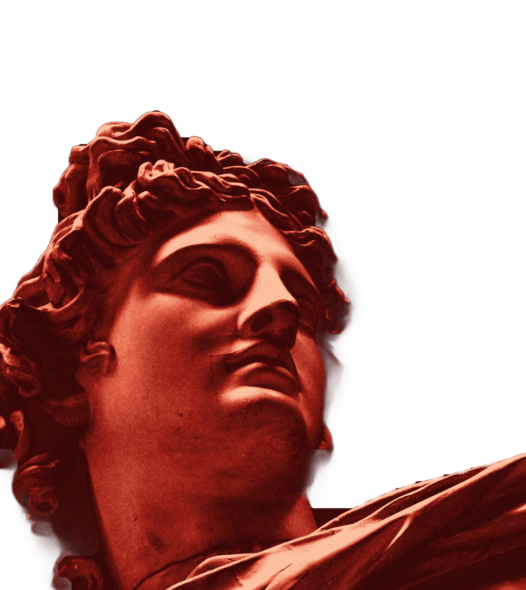

A long-exposure portrait.
Exposure time: 2,000 years.
A sitting that began before the calendar had a zero, and has not been called off.
The pose was meant to take an afternoon.
Has outlasted the sculptor, the empire and four museum directors.
Eyes up, chin up. Do not look at the camera; there was no camera.
Please do not touch the exhibit. The exhibit has been touched enough.
Hall IV · 02.04–30.09.27Museum of Long Exposures. Open daily except when he moves.